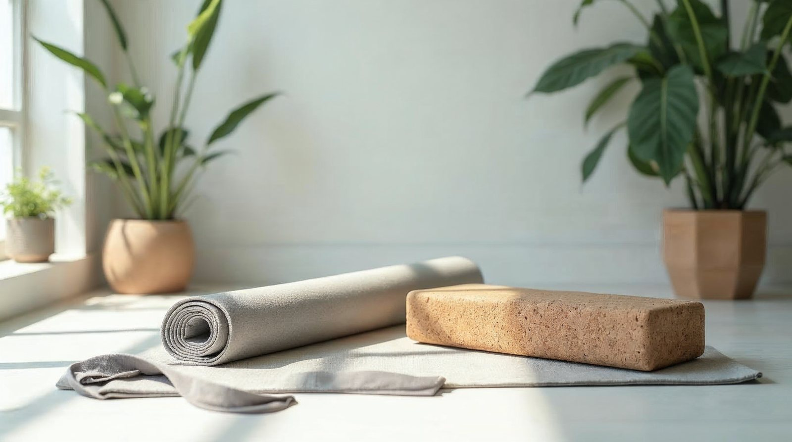
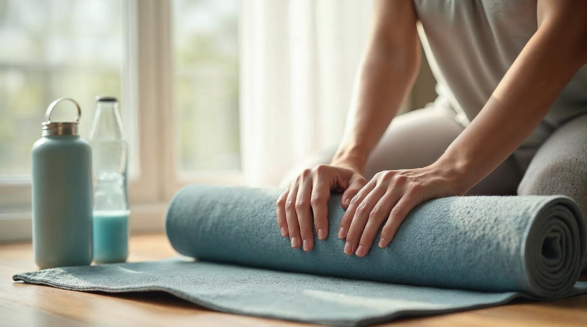
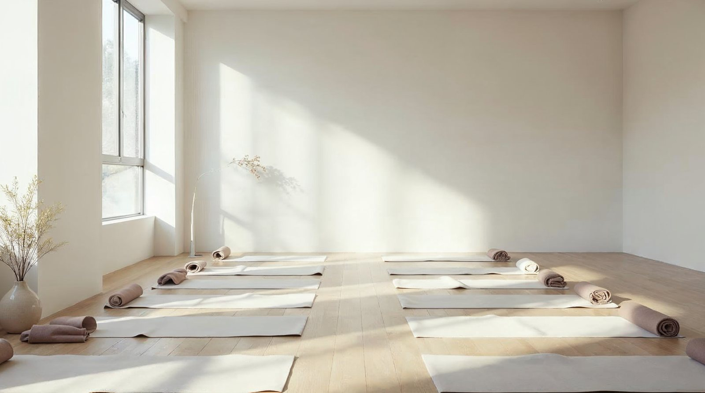
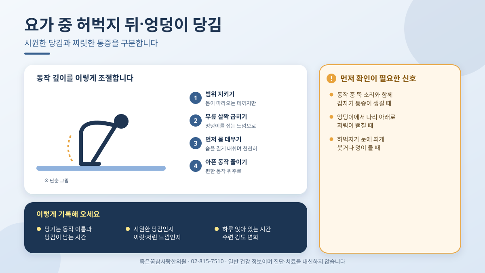

이종호 한의사 감수좋은꿈참사랑한의원 대표원장 (한의사 면허번호 19769)발행 2026-11-23 · 수정 2026-11-25
이 글의 차례
요가 중 허벅지 뒤와 엉덩이가 당긴다면, 먼저 그 느낌이 시원하게 늘어나는 당김인지 찌릿하거나 아픈 통증인지 구분하고, 아픈 쪽이라면 동작의 깊이부터 줄여 봅니다. 앞으로 숙이거나 다리를 벌리는 동작에서 허벅지 뒤쪽과 엉덩이가 심하게 당겨 몸이 떨리는 경험을 하는 분이 있습니다.
동작의 깊이를 조절하면 부담을 줄일 수 있는 경우가 많고, 엉덩이에서 다리 아래로 저림이 뻗치거나 '뚝' 하는 느낌과 함께 아파졌다면 지켜보기보다 먼저 확인을 받습니다.
왜 이런 불편이 생길 수 있나요
- 오래 앉아 지내면 허벅지 뒤 근육이 짧아진 상태로 굳기 쉬워 앞으로 숙일 때 강하게 당깁니다.
- 허리를 둥글게 말아 숙이면 허벅지 뒤보다 허리와 엉덩이 쪽이 대신 당겨지기도 합니다.
- 반동을 주거나 남과 비교하며 깊이 들어가면 근육이 버틸 수 있는 범위를 넘을 수 있습니다.
- 앉을 때 바닥에 닿는 엉덩이뼈 근처는 허벅지 뒤 근육이 시작되는 자리라, 깊이 숙이는 동작을 자주 반복하면 이 부근이 묵직하게 아플 수 있습니다.
- 엉덩이에서 다리 뒤로 찌릿하게 뻗친다면 근육뿐 아니라 신경이 예민해진 경우일 수 있습니다.
- 몸이 덜 데워진 아침이나 추운 날에는 같은 동작도 더 뻣뻣하게 느껴집니다.
먼저 이렇게 여쭙니다
- 어떤 동작에서 당기나요? 앞으로 숙일 때인지, 다리를 벌릴 때인지요.
- 당김이 시원한 느낌인가요, 찌릿하거나 아픈 느낌인가요?
- 동작이 끝난 뒤에도 불편함이 남나요?
- 의자에 오래 앉아 있을 때 엉덩이 아래쪽이 아프거나 저린가요?
- 허리 통증이나 다리 저림을 겪은 적이 있나요?
- 평소 앉아서 지내는 시간이 긴가요?

일상에서 먼저 해 볼 수 있는 것
수련 전 5~10분
- 바로 누워 무릎을 굽힌 채 한쪽 다리를 가슴 쪽으로 당겼다 내려놓기를 천천히 10번씩 해 몸을 데웁니다.
- 네발 자세에서 허리를 둥글게 말았다 펴기를 천천히 10번 하며 허리와 골반을 먼저 움직여 둡니다.
수련하는 동안
- 당김의 세기를 0~10점으로 매겨 시원하게 느껴지는 4~5점 정도에서 머물고, 찌릿하거나 몸이 떨리면 한 단계 얕게 돌아옵니다.
- 앞으로 숙일 때는 무릎을 살짝 굽히고 허리보다 엉덩이를 접는 느낌으로 합니다. 손이 바닥에 닿지 않으면 블록이나 접은 담요를 받쳐 높이를 올립니다.
- 앉아서 숙이는 동작은 엉덩이 밑에 접은 담요를 깔아 골반을 세우고, 다리를 벌리는 동작은 벌리는 폭을 줄입니다.
- 반동을 주지 말고 숨을 길게 내쉬며 천천히 합니다. 아픈 동작은 줄이거나 쉬고 편한 동작 위주로 합니다.
- 수업 전에 강사에게 당기는 쪽과 느낌을 알려 두면 다른 동작으로 바꿔 하기 쉽습니다.
평소 생활에서
- 오래 앉아 있는 날에는 30~50분마다 일어나 다리를 풀어 줍니다.
- 딱딱한 의자에 오래 앉으면 엉덩이 아래가 눌려 불편할 수 있어 방석을 깔고, 다리를 꼬지 않습니다.
상황별 예시
- 예를 들어 하루 종일 앉아 일하는 직장인이 퇴근 뒤 요가 수업에서 앞으로 숙이는 동작마다 허벅지 뒤가 떨릴 만큼 당긴다면, 무릎을 굽히고 블록을 받쳐 깊이를 줄인 채 2주 해 보며 수업 다음 날 남는 당김을 0~10점으로 적어 봅니다.
- 예를 들어 유연성을 기르려고 집에서 매일 다리 찢기를 조금씩 더 깊게 해 온 분이 엉덩이 아래 앉는 뼈 근처가 묵직하게 아프고 의자에 앉을 때도 불편하다면, 깊이 늘리는 동작은 잠시 쉬고 앉는 시간과 방석부터 살핍니다.
- 예를 들어 50대에 요가를 새로 시작한 분이 숙일 때 엉덩이에서 종아리 쪽으로 찌릿하게 내려가는 느낌이 있다면, 근육 당김보다 허리에서 오는 신호일 수 있어 그 동작은 멈추고 먼저 확인을 받아 봅니다.

스스로 점검해 보세요
- 숙이는 동작에서 허벅지 뒤가 떨릴 만큼 당긴다.
- 동작이 끝난 뒤에도 당김이 하루 넘게 남는다.
- 의자에 오래 앉아 있으면 엉덩이 아래쪽이 묵직하거나 아프다.
- 엉덩이에서 종아리나 발 쪽으로 찌릿하게 내려가는 느낌이 있다.
- 한쪽만 유난히 당기거나 덜 숙여진다.
- 반동을 주거나 옆 사람을 따라 깊이 들어가는 편이다.
- 하루 8시간 넘게 앉아서 지낸다.

한의원에서 함께 살필 수 있는 경우
- 동작 뒤 허벅지 뒤와 엉덩이가 며칠씩 뻐근한 경우 몸을 쓰는 방식과 근육의 긴장을 함께 살핍니다.
- 앉아 있는 시간이 길어 엉덩이와 허리가 함께 굳는 경우 생활 자세를 함께 살핍니다.
- 동작 중 한쪽만 유난히 당기는 경우 좌우의 균형을 함께 살핍니다.
좋은꿈참사랑한의원에서는 첫 방문 때 어떤 동작에서 언제부터 당겼는지, 시원한 당김인지 찌릿한 통증인지, 다리로 내려가는 저림은 없는지를 먼저 자세히 듣습니다. 그다음 맥부터 짚어 보고 잠과 식사, 하루 앉아 있는 시간을 함께 여쭙습니다.
이어서 허리와 골반의 좌우 균형, 누워서 다리를 드는 범위, 엉덩이와 허벅지 뒤의 아픈 자리, 다리 힘과 감각을 확인하고, 힘줄 쪽이 의심되면 필요하다고 판단될 때 초음파로 살핍니다. 침·약침·추나·온열 치료·체외충격파 등은 상태에 맞춰 정하고, 수련을 언제 어느 동작부터 다시 깊게 할지, 당분간 줄일 동작을 함께 정리해 드립니다.
평일은 저녁 8시까지(점심 13시~14시) 진료합니다.
얼마나 지켜보고 언제 상담할까요
- 시원한 당김이 수련 뒤 하루 이틀 안에 가라앉는다면 깊이를 조절하며 이어 가도 되는 경우가 많습니다.
- 당김이나 묵직한 통증이 사흘 넘게 남거나, 깊이를 줄여도 2주 넘게 같은 자리가 아프다면 그 동작은 쉬고 상담을 받아 보세요.
- 엉덩이에서 다리 아래로 저림이 내려가거나 앉아 있기 힘들 만큼 엉덩이 아래가 아프면 미루지 말고 확인합니다.
- 다시 깊게 할 때는 걷기와 계단에서 불편이 없는지 먼저 보고, 평소 깊이의 절반쯤부터 시작해 봅니다.
이렇게 기록해 오시면 상담이 쉬워집니다
- 당기는 동작 이름과 당김이 남는 시간
- 시원한 당김인지, 찌릿하거나 저린 느낌인지
- 저림이 있다면 어디까지 내려가는지(엉덩이·허벅지·종아리·발)
- 하루 앉아 있는 시간
- 최근 수련 횟수나 강도를 바꿨는지
이런 증상은 먼저 확인이 필요합니다
- 동작 중 '뚝' 하는 소리나 느낌과 함께 갑자기 통증이 생긴 경우
- 엉덩이에서 다리 아래로 저림이 뻗치거나 발에 힘이 빠지는 경우
이런 신호가 있으면 한의원보다 가까운 병원이나 응급실을 먼저 찾으세요.
관련 글
- 허리 디스크 초기 신호와 다리 저림은 어떻게 구분하나요?
- 오래 앉아 공부하거나 일할 때 허리와 골반은 얼마 간격으로 쉬어 주나요?
- 운동을 꾸준히 하는 분은 진료 전에 무엇을 알려야 하나요?

여쭙는 것
- 어떤 동작에서 당기나요? 앞으로 숙일 때인지, 다리를 벌릴 때인지요.
- 당김이 시원한 느낌인가요, 찌릿하거나 아픈 느낌인가요?
- 동작이 끝난 뒤에도 불편함이 남나요?
생활에서 해 볼 것
- 바로 누워 무릎을 굽힌 채 한쪽 다리를 가슴 쪽으로 당겼다 내려놓기를 천천히 10번…
- 네발 자세에서 허리를 둥글게 말았다 펴기를 천천히 10번 하며 허리와 골반을 먼저…
- 당김의 세기를 0~10점으로 매겨 시원하게 느껴지는 4~5점 정도에서 머물고, 찌릿…
한의원에서 함께 살필 것
- 동작 뒤 허벅지 뒤와 엉덩이가 며칠씩 뻐근한 경우 몸을 쓰는 방식과 근육의 긴장을…
- 앉아 있는 시간이 길어 엉덩이와 허리가 함께 굳는 경우 생활 자세를 함께 살핍니다.
- 동작 중 한쪽만 유난히 당기는 경우 좌우의 균형을 함께 살핍니다.
먼저 확인이 필요한 신호
- 동작 중 '뚝' 하는 소리나 느낌과 함께 갑자기 통증이 생긴 경우
- 엉덩이에서 다리 아래로 저림이 뻗치거나 발에 힘이 빠지는 경우
한눈에 보는 표
| 구분 | 핵심 |
|---|---|
| 여쭙는 것 | 어떤 동작에서 당기나요? 앞으로 숙일 때인지, 다리를 벌릴 때인지요. 당김이 시원한 느낌인가요, 찌릿하거나 아픈 느낌인가요? |
| 생활에서 해 볼 것 | 바로 누워 무릎을 굽힌 채 한쪽 다리를 가슴 쪽으로 당겼다 내려놓기를 천천히 10번씩 해 몸을 데웁니다. 네발 자세에서 허리를 둥글게 말았다 펴기를 천천히 10번 하며 허리와 골반을 먼저 움직여 둡니다. |
| 한의원에서 함께 살필 것 | 동작 뒤 허벅지 뒤와 엉덩이가 며칠씩 뻐근한 경우 몸을 쓰는 방식과 근육의 긴장을 함께 살핍니다. 앉아 있는 시간이 길어 엉덩이와 허리가 함께 굳는 경우 생활 자세를 함께 살핍니다. |
| 먼저 확인이 필요한 신호 | 동작 중 '뚝' 하는 소리나 느낌과 함께 갑자기 통증이 생긴 경우 엉덩이에서 다리 아래로 저림이 뻗치거나 발에 힘이 빠지는 경우 |
자주 묻는 질문
많이 당길수록 좋은 건가요?
시원한 정도의 당김은 괜찮을 수 있지만 아프거나 떨릴 정도로 깊이 하는 것은 부담이 될 수 있습니다.
당김이 며칠씩 남으면 쉬어야 하나요?
며칠 이상 남거나 걸을 때도 불편하다면 그 동작은 쉬고 상태를 확인해 보시길 권합니다. 저림이 함께 있다면 더 먼저 확인이 필요합니다.
몸이 뻣뻣해도 요가를 해도 되나요?
가능한 범위에서 천천히 하는 방식이 부담이 적습니다. 아픈 동작은 줄이거나 쉬세요.
수련 전에 몸을 데우는 방법이 있나요?
제자리에서 가볍게 걷거나 팔다리를 천천히 흔들어 몸을 데운 뒤 깊은 동작을 하는 편이 부담이 적습니다. 추운 날에는 양말과 겉옷을 챙기세요.
좋은꿈참사랑한의원은 재진 때 지난번 이야기부터 이어서 여쭙니다. 진료시간과 예약은 오시는 길에서 확인하세요.
어디서 상담받을 수 있나요?
좋은꿈참사랑한의원은 서울 동작구 만양로2길 2 신성빌딩 3층·5층(서울 동작구 상도동, 7호선 상도역 3번 출구 근처)에 있습니다. 한의사 3명(이종호 대표원장, 조영기 수석진료원장, 정원영 진료원장)이 진료합니다. 진료시간은 평일 09:30~20:00(점심 13:00~14:00), 토·일·공휴일 09:30~15:00이며, 방문 전 전화로 확인을 권합니다. 예약은 네이버 예약, 카카오톡 상담, 전화 02-815-7510로 받습니다.
이 글은 일반적인 건강 정보이며 개인의 진단이나 치료를 대신하지 않습니다. 증상이 있거나 복용 중인 약이 있다면 진료를 통해 확인하세요. 치료 효과는 개인마다 다를 수 있습니다.
작성 기준: 일반적으로 알려져 있는 건강 정보를 참고해 정리했습니다(대표원장 감수). 증상 기록은 1~2주 동안 하루 1회, 비슷한 시간에 적어 오시면 지난 상태와 비교하기 쉽습니다.